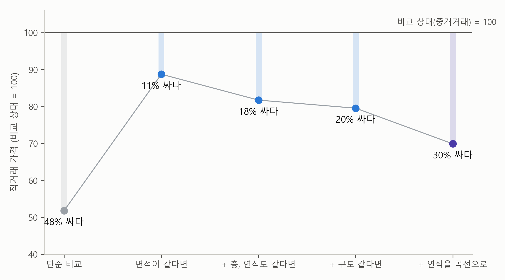
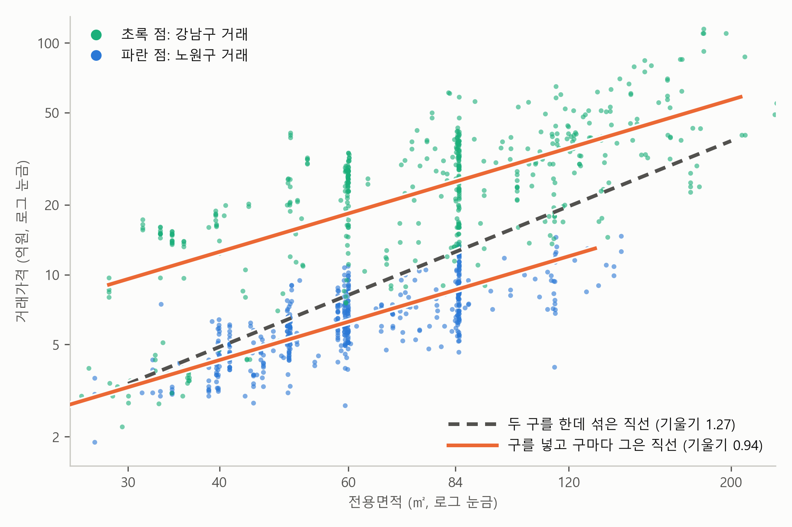

2. 다른 조건이 같다면 — 다중회귀분석의 계수#
이 장 첫머리 보고서의 회귀 결과 표는 서울 아파트 매매 66,589건으로 한 다중회귀분석의 결과를 요약한 것입니다. 이 절에서는 그 분석을 표 2-1로 다시 펼쳐 놓고 읽어 보겠습니다. 보고서가 지면 때문에 뺀 계수까지 모두 실었고, 마지막 열에는 각 계수를 “다른 조건이 같을 때의 가격 차이”로 바꿔 적었습니다. 이 열이 어떻게 나오는지가 이 절의 주제입니다.
표 2-1. 서울 아파트 거래가격의 다중회귀분석 (로그가격, 구의 기준은 노원구, \(n\) = 66,589, \(R^2\) = 0.74)
변수 |
계수 추정값 |
표준오차 |
\(t\)값 |
다른 조건이 같을 때 가격 차이 |
|---|---|---|---|---|
로그(전용면적) |
0.941 |
0.003 |
277.4 |
면적 1% 넓으면 +0.94% |
층 |
0.0107 |
0.0002 |
50.4 |
한 층 높으면 +1.1% |
연식 |
−0.0408 |
0.0004 |
−93.3 |
연식과 연식²이 함께 곡선을 그린다 (이 장의 마지막 절) |
연식² |
0.00078 |
0.00001 |
86.1 |
|
직거래 (중개거래 = 0) |
−0.358 |
0.006 |
−55.1 |
중개거래보다 30% 싸다 |
구: 강남구 |
1.028 |
0.008 |
133.3 |
노원구의 2.80배 |
구: 서초구 |
0.855 |
0.008 |
102.1 |
노원구의 2.35배 |
구: 송파구 |
0.763 |
0.006 |
117.5 |
노원구의 2.14배 |
구: 성동구 |
0.731 |
0.009 |
79.1 |
노원구의 2.08배 |
구: 용산구 |
0.722 |
0.011 |
64.1 |
노원구의 2.06배 |
구: 마포구 |
0.548 |
0.009 |
63.4 |
노원구의 1.73배 |
구: 동작구 |
0.502 |
0.008 |
62.1 |
노원구의 1.65배 |
구: 광진구 |
0.493 |
0.011 |
44.4 |
노원구의 1.64배 |
구: 강동구 |
0.387 |
0.007 |
53.3 |
노원구의 1.47배 |
구: 영등포구 |
0.365 |
0.007 |
49.8 |
노원구의 1.44배 |
구: 양천구 |
0.350 |
0.008 |
45.2 |
노원구의 1.42배 |
구: 중구 |
0.344 |
0.012 |
28.4 |
노원구의 1.41배 |
구: 종로구 |
0.249 |
0.015 |
17.1 |
노원구의 1.28배 |
구: 강서구 |
0.239 |
0.006 |
36.9 |
노원구의 1.27배 |
구: 서대문구 |
0.196 |
0.008 |
25.5 |
노원구의 1.22배 |
구: 동대문구 |
0.167 |
0.007 |
22.5 |
노원구의 1.18배 |
구: 성북구 |
0.127 |
0.007 |
18.5 |
노원구의 1.14배 |
구: 관악구 |
0.103 |
0.008 |
12.8 |
노원구의 1.11배 |
구: 은평구 |
0.012 |
0.007 |
1.6 |
노원구의 1.01배 |
구: 구로구 |
−0.009 |
0.007 |
−1.3 |
노원구의 0.99배 |
구: 중랑구 |
−0.058 |
0.008 |
−7.6 |
노원구의 0.94배 |
구: 강북구 |
−0.099 |
0.010 |
−10.2 |
노원구의 0.91배 |
구: 금천구 |
−0.193 |
0.010 |
−18.8 |
노원구의 0.82배 |
구: 도봉구 |
−0.208 |
0.008 |
−27.4 |
노원구의 0.81배 |
표가 깁니다. 구가 25개라서, 기준으로 삼은 노원구를 뺀 24개 구마다 계수가 하나씩 있기 때문입니다. 이 장 첫머리의 보고서는 1쪽에 담아야 해서 계수 표에 구 더미로는 강남구 하나만 싣고, 나머지는 그림으로 대신했습니다. 보고서의 그림 왼쪽 패널이 바로 이 24개 구의 계수를 마지막 열의 “노원구의 몇 배”로 바꿔, 구마다 점 하나로 그린 것입니다. 기준인 노원구는 1에 찍힌 주황 점입니다. 보고서의 통계 줄 끝에 적힌 “나머지 구 더미 23개는 그림의 왼쪽 패널”이 이 뜻입니다. 계수 1.028이 어떻게 “노원구의 2.80배”가 되는지는 다음 절에서 자세히 봅니다. 마찬가지로 보고서의 그림 오른쪽 패널은 연식과 연식² 두 계수를 함께 써서 그린 곡선이고, 이것은 이 장의 마지막 절에서 다룹니다.
로그 다시 보기
표 2-1의 회귀식은 가격과 면적에 로그를 취했습니다. 단순회귀분석 장의 로그 절에서 배운 규칙을 다시 떠올려 봅시다. 로그가 붙은 쪽은 %로 읽고, 안 붙은 쪽은 원래 단위로 읽습니다.
가격과 면적에 모두 로그가 붙은 면적의 계수는 탄력성입니다. 면적이 1% 넓으면 가격이 0.94% 높습니다.
가격에만 로그가 붙은 층, 직거래, 구의 계수는 그 변수가 1 다를 때 가격이 몇 % 다른지를 말합니다. 계수가 작으면 계수 × 100%로 어림하면 되고(층 0.0107이면 약 1.1%), 계수가 크면 3절에서 볼 정확한 계산이 필요합니다. 연식은 곡선으로 들어가 있어 예외이고, 이 장의 마지막 절에서 봅니다.
그래서 이 장의 계수는 모두 억원이 아니라 %와 배로 읽습니다. 계수를 볼 때마다 머릿속에서 한 번 더 바꿔야 해서 처음에는 번거롭습니다. 하지만 가격, 소득, 매출처럼 곱하기로 움직이는 변수는 실제 분석에서 대부분 로그를 취해 다루므로, 조금 귀찮더라도 이 장에서 여러 번 바꿔 읽으며 손에 익혀 두는 것이 좋습니다.
보고서는 이 숫자들을 읽는 법을 해석의 첫 항목 “계수 읽는 법”에 적어 두었습니다.
계수 하나하나는, 다른 조건은 모두 똑같고 그 변수 하나만 다른 두 아파트의 가격이 평균적으로 얼마나 다른지를 말한다.
이 한 줄이 이 장 전체의 열쇠입니다. 그런데 “다른 조건은 모두 똑같은 두 아파트”란 정확히 무슨 뜻일까요? 실제 거래 기록 속의 아파트들은 면적도, 층도, 연식도, 구도 제각각입니다. 다른 조건이 모두 같은 아파트끼리만 골라 비교한 것도 아닌데, 보고서는 어떻게 “다른 조건이 같다면”이라고 말할 수 있을까요?
이 물음과 이어지는 수수께끼도 하나 있습니다. 앞 절 끝에서 던져 둔 물음입니다. 표 2-1의 면적 탄력성은 0.94입니다. 그런데 같은 자료로 회귀분석을 하더라도 면적과 거래유형만 넣으면 1.00이 나옵니다. 여기에 층과 연식을 더해도 1.00 그대로인데, 구를 더하면 0.89로 내려가고, 연식을 곡선으로 넣으면 표 2-1의 0.94가 됩니다. 같은 면적의 효과인데, 면적과 어떤 변수를 함께 넣느냐에 따라 결과가 달라지는 것이죠.
미리 답부터 말하면, 다중회귀분석의 계수는 공정한 실험의 결과입니다. 다른 조건을 같게 맞춰 놓고 변수 하나만 바꿔 본 비교의 결과이고, 무엇을 같게 맞췄느냐가 달라지면 결과도 달라집니다. 이 절이 끝나면 보고서의 계수 하나하나가 “어떤 조건을 같게 맞춘 비교인지”와 함께 읽힐 것입니다.
공정한 실험의 규칙#
과학 시간에 해 본 식물 기르기 실험을 떠올려 봅시다. 햇빛이 식물을 더 잘 자라게 하는지 알아보려고 화분 두 개를 준비합니다. 하나는 창가에, 하나는 그늘에 둡니다. 2주 뒤 창가의 화분이 훨씬 크게 자랐습니다. 햇빛 덕분일까요?
그런데 알고 보니 창가 화분에는 물을 더 자주 줬고, 흙도 더 좋은 것을 썼습니다. 그러면 결론을 내릴 수 없습니다. 더 자란 것이 햇빛 때문인지, 물 때문인지, 흙 때문인지 가려낼 길이 없으니까요. 그래서 과학 시간에는 이렇게 배웁니다. 물, 흙, 화분 크기, 씨앗은 모두 똑같이 하고, 햇빛 하나만 다르게 하라. 그래야 두 화분의 차이를 햇빛의 효과라고 말할 수 있습니다. 이것이 이 절 전체를 꿰는 한 문장입니다.
효과 하나를 보려면, 나머지는 같게 두고 그것 하나만 다르게 한다.
아파트 가격을 두고 이런 실험을 할 수 있다면 좋겠지만, 할 수 없습니다. 완전히 똑같은 아파트를 노원구에도 짓고 강남구에도 지어 값을 비교해 볼 수는 없고, 같은 집을 직거래로 한 번, 중개거래로 한 번 팔아 볼 수도 없습니다. 우리 손에 있는 것은 이미 일어난 거래의 기록뿐이고, 그 기록 속의 아파트들은 여러 조건이 한꺼번에 다릅니다. 물도 흙도 햇빛도 제각각인 화분들만 잔뜩 있는 셈입니다. 그래도 방법이 있습니다. 다중회귀분석은 이런 기록으로 회귀식을 세우고, 그 회귀식 안에서 나머지를 똑같이 두고 하나만 바꿔 봅니다. 실험실 대신 회귀식 안에서 실험을 하는 셈입니다. 어떻게 그럴 수 있는지는 식을 한 번 들여다보면 알 수 있습니다.
회귀식 안의 실험 — 계수의 뜻#
변수가 두 개뿐인 회귀식을 생각해 봅시다. 층과 면적으로 가격을 설명하는 식입니다. 표 2-1의 회귀식은 가격과 면적에 로그를 취했지만, 원리를 보는 동안에는 설명을 단순하게 하려고 잠시 로그 없이 그냥 가격과 면적으로 쓰겠습니다. 로그를 취해도 아래의 원리는 똑같습니다.
식에서 각 변수에 곱해지는 숫자 \(b_1\), \(b_2\)를 계수(coefficient)라고 부릅니다. 단순회귀분석 장에서 기울기라고 부르던 숫자가 변수마다 하나씩 생긴 것입니다. 회귀분석은 자료를 가지고 \(a\), \(b_1\), \(b_2\)의 값을 정하고, 표 2-1의 “계수 추정값” 열이 바로 이렇게 정한 값들입니다.
이제 이 식 안에서 공정한 실험을 해 봅니다. 아파트 두 채가 있습니다. 면적은 똑같고, 층만 하나는 11층, 하나는 10층입니다. 두 아파트를 식에 넣으면 이렇게 됩니다.
두 식을 빼 봅시다. \(a\)는 양쪽에 똑같이 있으니 지워집니다. 면적이 똑같으니 \(b_2 \times \text{면적}\)도 지워집니다. 남는 것은 \(b_1 \times 11 - b_1 \times 10\), 곧 \(b_1\) 하나입니다.
면적은 똑같고 층만 한 층 다른 두 아파트의 가격 차이가 \(b_1\)이라는 뜻입니다. 화분 실험에서 물과 흙을 똑같이 맞추고 햇빛만 다르게 한 것과 같은 일을, 식이 뺄셈 한 번으로 해 준 것이죠.
변수가 다섯 개로 늘어도 원리는 같습니다. 표 2-1의 회귀식에는 면적, 층, 연식, 구, 거래유형이 들어 있습니다. 두 아파트가 다른 조건은 모두 똑같고 층만 한 층 다르면, 뺄셈에서 나머지 변수의 항은 모두 지워지고 층의 계수만 남습니다. 보고서의 해석에 적힌 “계수 읽는 법”이 바로 이 뺄셈에서 나온 문장입니다. 이제 로그로 돌아가면, 표 2-1에서 층의 계수는 0.0107입니다. 가격에 로그를 취했으므로 이 차이는 억원이 아니라 %로 읽어 “다른 조건이 같다면 한 층 높을수록 1.1% 비싸다”가 됩니다.
다만 “계수 읽는 법”에는 “평균적으로”라는 말이 들어 있습니다. 회귀식이 내놓는 것은 예상 가격이고, 실제로 조건이 똑같은 두 아파트를 찾아도 두 가격의 차이가 꼭 1.1%가 되지는 않습니다. 같은 조건에서도 실제 가격은 예상 가격 주위로 흩어지기 때문입니다. 계수는 그런 차이들의 평균적인 크기를 말합니다.
계산 속의 실험실 — 아파트 한 채로 해 보기#
앞에서 뺄셈으로 본 원리를 표 2-1의 회귀식에 직접 적용해 보겠습니다. 이 회귀식은 일종의 가격 계산기입니다. 면적, 층, 연식, 구, 거래유형을 넣으면 예상 가격이 나옵니다.
이 계산기에 아파트 한 채를 넣어 봅시다. 노원구, 전용 84㎡, 10층, 지은 지 26년, 중개거래. 계산기는 약 8.1억원을 내놓습니다. 단순회귀분석 장의 보고서가 노원구 84㎡에 대해 내놓은 8.3억원과 거의 같은 값입니다. 이제 이 한 채의 조건을 하나씩만 바꿔 봅니다. 나머지 조건은 그대로 둡니다.
바꾼 조건 하나 |
예상 가격 |
달라진 정도 |
|---|---|---|
(기준) 노원구, 84㎡, 10층, 26년, 중개거래 |
8.1억원 |
|
층만 10층 → 20층 |
9.1억원 |
+11% |
면적만 84㎡ → 92㎡ (10% 넓게) |
8.9억원 |
+9% |
거래유형만 직거래로 |
5.7억원 |
−30% |
구만 강남구로 |
22.8억원 |
2.8배 |
연식만 26년 → 5년 |
11.5억원 |
+41% |
표의 한 줄 한 줄이 공정한 실험 하나입니다. 층만 열 층 올리면 11% 비싸지는데, 한 층에 1.1%씩 열 번 오른 것입니다. 면적을 10% 넓히면 9% 비싸지는데, 면적 탄력성 0.94가 “면적 1%에 가격 0.94%”라는 뜻이니 10%에는 약 9%입니다. 직거래로만 바꾸면 30% 싸지고, 구만 강남구로 옮기면 2.8배가 됩니다. 표 2-1의 마지막 열이 말하는 것이 바로 이 줄들입니다. 계수 하나는 다른 조건을 그대로 둔 채 그 변수 하나만 바꾼 실험의 결과입니다.
이 %는 기준으로 고른 노원구 84㎡ 아파트에만 해당하는 숫자가 아닙니다. 강남구의 59㎡ 아파트든 도봉구의 120㎡ 아파트든, 다른 조건은 그대로 두고 한 층만 올리면 가격은 똑같이 1.1% 높아집니다. 다만 연식은 조금 다릅니다. 연식은 곡선으로 들어가 있어서, 똑같은 다섯 해라도 10년 된 아파트와 5년 된 아파트는 가격 차이가 크고(약 15%), 30년 된 아파트와 25년 된 아파트는 차이가 거의 없습니다. 연식의 계수는 숫자 하나로 읽지 않고 보고서의 그림 오른쪽 패널에 그린 곡선으로 읽어야 하는 이유이고, 이 장의 마지막 절에서 자세히 봅니다.
직거래는 정말 48% 쌀까#
먼저 단순 비교하면 어떤 일이 생기는지 보겠습니다. 서울 아파트 매매 66,589건 가운데 직거래가 3,426건입니다. 직거래의 중위 거래가는 4.5억원, 중개거래는 9.5억원으로, 직거래가 절반에 가까운 값입니다. 직거래 하나만 넣은 회귀분석으로 두 집단의 평균적인 차이를 계산해도 직거래가 48% 쌉니다. 그러면 “직거래로 사면 반값 가까이 싸다”고 말해도 될까요?
이 비교는 앞의 화분 실험에서 물과 흙까지 다르게 한 비교와 같습니다. 직거래로 팔린 아파트와 중개거래로 팔린 아파트는 거래 방식만 다른 것이 아니라 아파트 자체도 다릅니다. 직거래로 팔린 아파트가 훨씬 작고(중위 면적 48㎡ 대 79㎡), 훨씬 새것입니다(중위 연식 3년 대 25년). 특히 직거래의 41%가 전용 30㎡ 이하의 소형인데, 중개거래에서는 이런 소형이 2%뿐입니다. 이처럼 평균 가격의 차이 48% 안에는 거래 방식의 차이와 함께 면적의 차이, 연식의 차이가 섞여 있습니다.
공정한 비교를 하려면 직거래 아파트와 면적, 층, 연식, 구가 똑같은 중개거래 아파트를 비교해야 합니다. 앞에서 본 뺄셈이 그 방법을 알려 줍니다. 거래유형을 직거래면 1, 중개거래면 0인 변수로 회귀식에 넣으면(이런 변수는 다음 절에서 자세히 봅니다), 그 계수는 “다른 조건은 똑같고 거래유형만 다른 두 아파트”의 차이가 됩니다. 이때 “다른 조건”은 회귀식에 함께 넣은 변수들입니다. 그러니 회귀식에 무엇을 함께 넣느냐가 곧 무엇을 같게 맞추느냐입니다.
직거래 하나만 넣은 회귀식은 이렇습니다(앞에서처럼 잠시 로그 없이 씁니다).
이 식에서 직거래 변수에는 직거래 아파트이면 1을, 중개거래 아파트는 0을 넣습니다. 그러면 직거래 아파트의 예상 가격은 \(a + b\), 중개거래 아파트는 \(a\)이고, 둘을 빼면 \(b\)가 남습니다. 따라서 \(b\)는 (아무것도 맞추지 않은 상태에서의) 두 집단의 평균 가격 차이, 곧 단순 비교입니다. 실제 회귀식(로그)에서는 이 값이 48%입니다.
면적을 함께 넣으면 식에 항이 하나 더 붙습니다.
이제 \(b\)는 “면적이 같은 두 아파트를 비교할 때 직거래와 중개거래의 차이”로 바뀝니다. 실제 회귀식에서는 이 값이 11%입니다.
층, 연식, 구를 더해도 같습니다. 식에 항이 하나씩 붙을 때마다 \(b\)는 더 많은 조건을 똑같이 맞춘 두 아파트의 차이가 됩니다. 이렇게 변수를 하나씩 늘려 가며 회귀분석을 다시 하고, 그때마다 직거래의 계수를 읽었습니다. 그림 2-1이 그 결과입니다.

그림 2-1. 직거래 아파트의 비교 상대인 중개거래 아파트의 가격을 100으로 놓았을 때 직거래 아파트의 가격. 점이 위의 선(상대)보다 아래로 내려갈수록 직거래가 싸다. 맨 왼쪽은 단순 비교한 값이고, 오른쪽으로 갈수록 같게 맞춘 조건이 하나씩 늘어난다. 맨 오른쪽(보라색)이 보고서의 최종 모형에서 나온 값이다.
그림에서 보듯이 차이는 48%에서 11%로 크게 줄었다가, 18%, 20%, 30%로 다시 커집니다. 줄었다가 커지는 이 계단을 읽는 열쇠는 하나입니다. 조건을 하나 맞출 때마다, 직거래 아파트와 비교되는 상대가 바뀝니다. 계단의 다섯 점은 직거래 아파트를 다섯 상대와 하나씩 비교한 결과입니다.
처음 단순 비교는 직거래된 아파트들과 중개거래된 아파트들의 가격을 그대로 비교한 것입니다. 다음으로 면적을 똑같이 맞추면, 직거래 아파트의 비교 상대가 중개거래 아파트 전체에서 직거래 아파트와 면적이 같은 아파트들로 좁혀집니다. 이때 직거래가 싼 정도는 48%에서 11%로 크게 줄어듭니다. 단순 비교 때는 중개거래 쪽에 면적이 넓어서 비싼 아파트가 많이 들어 있었는데, 면적을 맞추면 이런 아파트들이 비교에서 빠지는 셈이기 때문입니다.
이렇게 조건을 하나씩 맞춰 갈수록 상대는 직거래 아파트와 점점 닮아 갑니다. 화분 실험에서 물과 흙을 하나씩 똑같이 맞춰 가는 것과 같습니다. 그리고 가장 많이 닮은 상대와 비교한 마지막 값, 30%가 보고서의 직거래 계수입니다.
이 계단에서 두 가지를 읽을 수 있습니다. 하나, 단순 비교한 숫자는 여러 차이가 섞인 숫자입니다. 둘, 조건을 맞추면 차이가 줄어들 수도 있고 커질 수도 있습니다. 그 조건을 맞췄을 때 비교 상대가 비싸지는지 싸지는지에 달려 있습니다.
이렇게 회귀식에 함께 넣어 같게 맞추는 것을 그 변수를 통제한다(control)고 말합니다. “면적을 통제하면”은 “면적이 같다면”과 같은 말입니다. 그래서 표 2-1의 직거래 계수에서 나온 30%는 “면적, 층, 연식, 구가 같은 아파트끼리 비교하면 직거래가 30% 싸다”로 읽습니다. 왜 싸게 거래되는지(예를 들어 가족 사이의 거래가 섞여 있는지)는 이 계수가 말해 주지 않습니다. 계수는 차이의 크기를 말할 뿐입니다.
변수를 더하면 왜 계수가 바뀌나#
이제 처음의 수수께끼로 돌아갈 수 있습니다. 직거래 하나만 넣은 회귀분석에서 출발해 변수를 하나씩 더해 가며 회귀분석을 다시 해 보면 표 2-2와 같습니다. 그림 2-1의 계단과 같은 다섯 단계이고, 열 하나가 회귀분석 하나이며, 맨 오른쪽 열이 보고서의 최종 모형입니다.
표 2-2. 변수를 하나씩 더할 때
(1) 직거래만 |
(2) + 면적 |
(3) + 층, 연식 |
(4) + 구 |
(5) + 연식² |
|
|---|---|---|---|---|---|
직거래가 싼 정도 |
48% |
11% |
18% |
20% |
30% |
면적 탄력성 |
1.00 |
1.00 |
0.89 |
0.94 |
|
층 (1층당) |
1.1% |
1.1% |
1.1% |
||
연식 (1년당) |
−0.7% |
−0.5% |
곡선 |
||
\(R^2\) |
0.05 |
0.42 |
0.45 |
0.71 |
0.74 |
표에서 보듯이 첫 줄의 직거래는 그림 2-1의 계단 그대로입니다. 이번에는 둘째 줄의 면적 탄력성을 봅시다. 면적을 넣었을 때 1.00이었고 층과 연식을 더해도 1.00이었는데, 구를 더하자 0.89로 내려갔습니다.
두 구만 놓고 보면 이유가 잘 보입니다. 그림 2-2는 노원구와 강남구의 거래를 함께 그린 것입니다. 두 축 모두 로그 눈금이라, 직선의 기울기가 곧 면적 탄력성입니다.

그림 2-2. 노원구(파랑)와 강남구(초록)의 거래(각 500건 무작위). 회색 점선은 두 구를 구분하지 않고 한데 섞어 그은 직선, 주황 직선 두 개는 구를 넣은 회귀식이 구마다 그은 직선이다.
그림에서 보듯이 두 구의 점들은 따로 모여 있습니다. 강남구는 노원구보다 같은 면적에서 훨씬 비싸서 점들이 위쪽에 모여 있고, 넓은 아파트도 더 많습니다(평균 면적 85㎡ 대 63㎡). 그래서 두 구를 한데 섞으면 작은 아파트 쪽에는 노원구 점이 많고 넓은 아파트 쪽에는 강남구 점이 많아집니다. 이 점들 사이로 직선을 그으면, 직선은 왼쪽 아래에 모인 노원구 점들에서 오른쪽 위에 모인 강남구 점들로 가파르게 올라갑니다. 기울기 1.27입니다. 이 기울기 안에는 “전용면적이 넓어지는 효과”와 함께 “노원구에서 강남구로 넘어가는 효과”가 섞여 있습니다. 넓은 아파트가 비싼 구에 많다 보니, 면적이 입지의 몫까지 떠안은 것입니다.
구를 회귀식에 넣으면 비교가 같은 구 안으로 들어갑니다. 노원구는 노원구끼리, 강남구는 강남구끼리 면적과 가격을 비교한 결과를 모은 것이 주황 직선 두 개이고, 기울기는 0.94입니다. 구의 차이는 두 직선의 높이 차이가 맡고, 기울기에는 순수하게 면적의 몫만 남습니다. 서울 25개 구 전체에서도 같은 일이 일어났습니다. 넓은 아파트가 많은 구일수록 대체로 비싼 구여서, 구를 넣기 전의 면적 탄력성 1.00에는 입지의 몫이 섞여 있었고, 구를 넣자 0.89로 내려간 것입니다. 이렇게 회귀식에서 빠진 변수의 몫을 다른 변수가 떠안아 생기는 차이를 통계학에서는 누락 변수 편의(omitted variable bias)라고 부릅니다.
그렇다면 변수를 더할 때마다 모든 계수가 바뀔까요? 그렇지 않습니다. 표 2-2에서 층의 효과는 세 열 모두 1.1%입니다. 반올림하기 전의 값도 1.12%, 1.06%, 1.08%로 거의 변하지 않습니다. 어떤 변수를 더했을 때 원래 변수의 계수가 바뀌려면 두 가지가 함께 필요합니다. 새로 넣은 변수가 가격과 관계가 있어야 하고, 동시에 원래 변수와도 얽혀 있어야 합니다. 구는 가격과 관계가 크고 면적과도 얽혀 있어서(비싼 구에 넓은 아파트가 많다) 면적의 계수를 바꿨습니다. 반면 층은 구나 면적이나 연식과 거의 얽혀 있지 않습니다. 고층이 비싼 구에만 몰려 있는 것도, 넓은 아파트에만 몰려 있는 것도 아니라서, 무엇을 더해도 층이 떠안고 있던 남의 몫이 없습니다. 그래서 층의 계수는 거의 그대로입니다.
표 2-2의 맨 아랫줄 \(R^2\)도 함께 보면, 변수를 더할수록 0.05, 0.42, 0.45, 0.71, 0.74로 올라갑니다. 직거래 하나로는 가격 차이를 거의 설명하지 못하고(0.05), 크게 오른 것은 면적을 넣은 열과 구를 넣은 열입니다. 서울 아파트 가격 차이의 큰 몫이 어느 구에 있느냐에 달려 있다는 뜻입니다. 면적 탄력성이 마지막 열에서 0.94로 조금 다시 오르는 것도 같은 원리로 생긴 일인데, 연식을 곡선으로 넣는 이야기와 함께 이 장의 마지막 절에서 봅니다.
“같다면”의 범위#
마지막으로 꼭 기억할 것이 하나 있습니다. 다중회귀분석이 같게 맞춰 주는 것은 회귀식에 넣은 변수뿐입니다. 표 2-1의 회귀식에는 면적, 층, 연식, 구, 거래유형이 들어 있으니, “다른 조건이 같다면”의 “다른 조건”도 이 다섯 가지입니다. 단지 규모, 지하철역과의 거리, 학군처럼 회귀식에 없는 조건은 같게 맞춰지지 않습니다. 예를 들어 강남구 계수의 2.8배는 강남구라는 이름표 하나의 값이 아닙니다. 이 자료로는 따로 떼어 낼 수 없는 지하철역과의 거리, 학군 같은 차이가 두 구 사이에 있다면, 그 차이도 2.8배 안에 함께 들어 있습니다. 보고서가 한계에 “자료에 없는 요인은 반영되지 않았다”고 적어 둔 것이 이 뜻입니다.
요약 — 직관적 의미
효과 하나를 보려면, 나머지는 같게 두고 그것 하나만 다르게 한다. 다중회귀분석은 이 실험을 회귀식 안에서 한다.
계수 — 다른 조건은 똑같고 그 변수 하나만 다른 두 아파트의 평균적인 차이. 두 아파트를 회귀식에 넣고 빼면 나머지 항은 지워지고 그 계수만 남는다.
통제 — 회귀식에 함께 넣어 같게 맞추는 것. 무엇을 함께 넣느냐가 곧 무엇을 같게 맞추느냐다.
단순 비교 — 여러 차이가 섞인 숫자. 직거래의 48%에는 면적과 연식의 차이가 섞여 있고, 같은 조건이면 30%다.
누락 변수 편의 — 회귀식에서 빠진 변수의 몫을 다른 변수가 떠안아 생기는 차이. 구를 빼면 면적이 입지의 몫까지 떠안는다.
“같다면”의 범위 — 회귀식에 넣은 변수까지만 같게 맞춰진다.
남는 질문#
계수가 “다른 조건을 그대로 둔 실험”의 결과라는 것까지 왔습니다. 그런데 한 가지가 설명되지 않은 채 남아 있습니다. 면적, 층, 연식은 숫자라서 계산기에 그대로 넣을 수 있지만, 구는 숫자가 아닙니다. “강남구”라는 이름을 어떻게 회귀식에 넣었을까요? 표 2-1의 “구: 강남구” 같은 계수가 그렇게 해서 나온 것이고, 강남구 계수 1.028이 어떻게 2.8배가 되는지도 거기서 나옵니다. 다음 절에서 다룹니다.